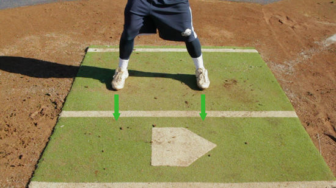

Astuce
Équipes
AL EAST
AL CENTRAL
AL WEST
NL EAST
NL CENTRAL
NL WEST
Vidéo de la semaine
À propos
Bien Frapper
Bien se positionner
Mettez vous a une distance de la longueur de vore battez du marbre
Reculez vous vers le receveux pour que votre pied soit alligner au centre du triangle à l'avant du marbre
Plier légerement les genoux

Bien tenir la batte
Tenir la batte de facons a ce que les jointures aligner
Levez votre coude pour qu'elle soit alligner avec votre épaule
Frapper
Lorsque la balle arrive, Levez legerement votre pied pour donner de la puissance à votre frappe avec vos jambes
SURTOUT ! ne jamais retenir son élan, quand vous frapper continuez votre élan de bras jusqu'a derière vous
Bien lancer
Bien prendre la balle
Placer la balle pour que les couture forme un "C"
Placer votre index et votre majeur sur la couture du haut
Bonne position
Vous mettre perpendiculaire à la plaque
Faire un pas vers l'arrière de la plaque
Ramenez les mains vers sa poitrine dans les laisser dans le gant
Levez votre jambe afin de faire un angle de 90°
Bien s'élancer
Garder l'équilibre votre pied
Garder la tête bien droite et regarder où vous voulez visez
Détendez les coudes
Faites un emjambé le plus loin pour gagné de la puissance dans votre lancer
Laché la balle quand elle est droit devant vous
SURTOUT continuez votre élan et ramenez votre jambe devant afin que votre corps fait face au frappeur